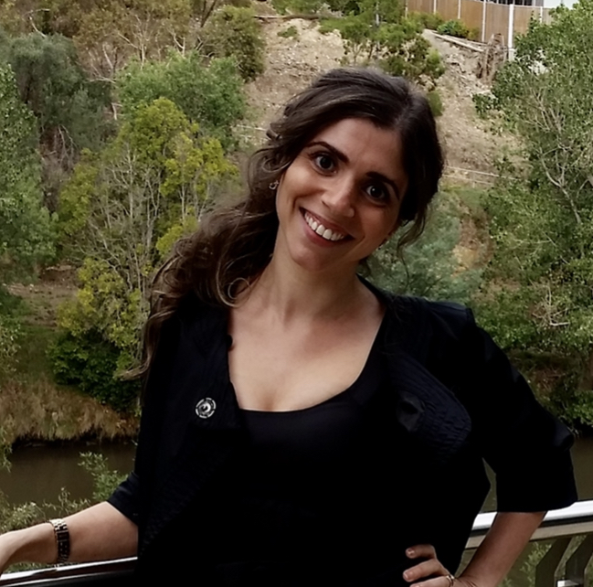

|
Daniela Frattali s3883762 E: s3883762@student.rmit.edu.au |
 |
A recruitment professional with more than 15 years experience who is currently working in the Disability Employment Service sector. Born and bred in Melbourne, Daniela is a coffee lover and is always looking out for a really good piccolo. When not at work or hunting for a good coffee, she enjoys reading, yoga, music and gaming with her son. Daniela has recently taken up running and she and her son enjoy long bike rides throughout Melbourne.
Growing up Daniela was really interested in computers and was lucky to have an early introduction as her uncle worked for Microsoft. She was learning about basic software and hardware from an early age and had access to some great games too. She always loved helping build and update the computers of her family and friends. Now having exposure to the business world in Project Management and Not For Profits, her interests have developed into Data Analytics.
### IT experience
Professionally, Daniela has not worked in IT. As she has predominantly worked in management, she has had opportunities to provide support to the Information Technology teams who have always been based interstate, in the install of new hardware or roll out of new systems.
### Why did you choose to come to RMIT?
Daniela sees RMIT as a world leader in education and would be proud to hold a qualification from such a forward thinking organisation. She believes that their industry linkages are second to none and she will be able to learn from progressive lectures with real word experience and form valuable networks with her peers.
### What do you expect to learn during your studies?
Daniela is excited to expand her knowledge in Information Technology and knows that she is starting from a basic level so has a lot to learn. She is at a stage where she wants to change careers and expand her options though further study in IT. As she has very limited professional experience in Information Technology, she believes that this subject will help her decide if she will pursue it as a career, potentially in the Data Analyst area as she sees this as a field with opportunity and growth.
As a base, Introduction to Information Technology will allow her to ease back into study to learn new skills and apply for a greater range of positions in a new industry.
https://www.ethicaljobs.com.au/members/TQSolutions/data-analyst---reporting
A global not for profit had a position for a Data Analyst in 2019 in Melbourne. Working in the Donor Analytics and Insights team whilst reporting to the manager, this role is desirable as Daniela would be able to provide strategic analysis on supporter data to help raise revenue more effectively. Required skills include being able to develop and implement data collection systems efficiently, maintain data governance process and interpreting said data to create reports to identify improvement opportunities. A strong proficiency in Excel along with high level understanding of various other computer applications (Word, CRM Systems, etc.) is required, which thanks to Daniela’s many years in the recruitment, she is confident in.
She would need to learn more about RFV analysis, Blackbud products and predictive income modeling. To be successful, Daniela would also have to prove her problem solving ability including her analytical and conceptual thinking gained through her work experience. She would be able to demonstrate her strong communications skills and rapport building with a diverse range of internal and external stakeholders.
### The results of online Myers-Briggs test https://www.16personalities.com/enfj-personal
Proudly following in the footsteps of Oprah, Daniela is an ENFJ-A / ENFJ-T on the Myers Briggs Type Indicator. This indicates that she is classed as a Protagonist, which are known to be natural-born leaders, full of passion and charisma. She feels things deeply and takes pride and joy in helping others to work together to improve themselves and their community. She has always looked for work that allows her to help others improve their situation.
Protagonist personality types are altruists, sometimes to a fault, and at times Daniela has willingling taken the fire while standing up for the people and ideas she believes in. She would never admit to being overly idealistic, but is fully aware that she is trusting to a fault, and has been mistaken for nieve, but don't worry, she would never judge you for judging her.
### The results of Lifetrain http://www.emtrain.eu/learning-styles/
Daniela has a dominant Pragmatist learning style followed by Activist. She feels that both of these styles work well in group activities as they thrive with discussions and brainstorming. They both allow her to be open minded, try new things and minimise what she considers to be time wasting activities.
### The results of leadership style https://eml.usc.edu/leadership-style-quiz
Having taken the Leadership style quiz from the University of Southern California, Daniela’s leadership style is predominantly Postmodern. Believing in collaboration and creativity, whilst being unselfish in helping others and groups achieve their goals, this management style is democratic and understands that great leadership is both an art and technical know how.
### What do the results of these tests mean for you? How do you think these results may influence your behaviour in a team?
As Daniela's personality is passionate and she has strong collaborative leadership qualities, she may try to take control of a team. This would not be in a way to intentionally criticise or dominate, but as she really dislikes indecision, she may be seen as pushy when encouraging her team to formalise decisions. If she is not a subject matter expert, she will not offer to lead the team but instead, would openly advise her teammates that she is happy to support the leader and would appreciate a project timeline to make sure that it stays on track. She would encourage open communication and regular meetings to make sure the project is on track, and would ask as many questions as needed to ensure her and her team's understanding.
### How should you take this into account when forming a team?
When forming a team, she would be happy to be placed with anyone who has an open communication style, the ability to listen to the whole team and can encourage engagement while keeping things on track to meet clearly defined goals.
### Overview & Motivation
Daniela’s project idea merges her interests in coffee, wearable technology and fitness, creating an application that will interface with the Apple Watch to monitor water intake based on caffeine consumed. As coffee is the most popular hot drink consumed world wide, the goal is to ensure that users are keeping up with recommended water intake to compensate for the diuretic effect that caffeine causes. This ensures optimum health and hopefully relieves any guilt of caffeine consumption for the health conscience. In its first stage, this would be done by simply entering some personal information at set up, then tap an icon per coffee consumed to receive the visual reminders for water consumption.
### Description
Called Caffeina, the application would be simple to use. In its first version, nce you create an account, you would enter your gender, height and weight to increase the accuracy of the caffeine consumption calculations. From then you would simply enter a preferred default coffee type, such as Espresso, Milk (covering latte, flat white and cappuccino) or Americano. This would then create an icon for you to tap each time you finished your default coffee. Had a double shot? No problem, tap twice. Half strength? Hold down the icon until it flashes and slide down. Decided on decaf? Swipe the icon to the left. Each time you add a coffee, it will tally the caffeine consumed to that point and a icon will appear to show how many cups of water you should drink. You can tick off the cups as you drink them and they fade.
After consultation with a dietitian and other health resources, Daniela would code into the application, based on users data, how much water is required to negate any of the caffeines dehydration effects and over what desired time frame. As the average amount of caffeine is the similar in many espresso based drinks, the first version of the application would use a generic amount of caffeine.
V2 - Expand coffee options to include drip and instant coffee - Further consultation with health resources to ensure accurate programming of caffeine levels and water consumption recommendations.
V3 - Expanding Caffeina’s use by adding a calorie counter options for milk and sugar. This would increase the user base as it now covers hydration and calorie intake.
V4 - Barcode interface to improve accuracy of caffeine and calories consumed. To be a simple scan of a barcode and if the product isn't recognised, the ability to manually input the data to save it for next time and other users.
V5 - Link in with Apple Health application to share your personal data more accurately
### Tools and Technologies / Skills Required
The application will be programmed in Swift language and use Xcode software due to its built in Interface Builder. Swift was developed by Chris Later of Apple in 2010 and first released in 2014 by Apple as their main language to replace Objective-C. As of September 2020, Swift now supports MacOS, Linux and Window platforms so can be widely used. Xcode, an Integrated Development Environment, was first released in 2003, with the latest update released in December 2020 and is available to download on the Mac App Store for free. To make sure the application is easy to use, Apple Human Interface Guidelines would be followed throughout the development.
The artwork in the application would be simple, and only requires two icons main icons in the initial versions, coffee and water. These would be created using pixel art on a free pixel art drawing application, such as makepixelart.com. As the application grows and develops, additional art may be added such as a smiley face when the user has achieved your water intake goal.
As these are all free and widely used languages, programs and resources, the initial development of Caffeina would be able to be done by Daniela with support from her Information Technology Mentor who has wide ranging and proven programming and development skills.
### Outcome
Daniela believes that Caffeina would be particularly useful, for not only the activewear, latte drinking set in Melbourne, but anyone who enjoys coffee and wants to maintain or improve their fitness. Caffeina is simple to use and wants to be user friendly. It wants to give the user a sense of satisfaction when they have consumed the recommended water for their coffee intake. It is designed to help improve your health through hydration, as well as negate any guilt you may feel when you are picking up your fourth or fifth espresso.
As Caffeina develops, becomes more sophisticated and gains in popularity, the goal would be to sell the application to Apple to be absorbed into the Apple Health application.